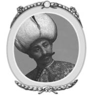

II : Orhan
1326-1359

Osman ölüm döşeğindeyken, oğullarından en genç olan Orhan’ı halefi olarak seçti. Kırk iki yaşındaki Orhan babasının kontrolü altında asker olarak yetiştirildi. Savaşlarda çok büyük bir başarı gösteren Orhan, Bursa’yı almıştı. Büyük olan oğlu Alaaddin bir asker değildi. Alaaddin çok çalışkan bir adamdı, Edebali’nin rehberliğinde hayatını Kur’an’dan gelen dine ve kanunlara adadı.
Birçok tarihçi Orhan’ın, babasının arzularını yerine getirmedeki isteksizliği ve büyük ağabeyinin önüne geçmeyi istemediği konusunda hemfikirdir. Bu sebeple Orhan imparatorluğu ikiye bölmeyi teklif eder; ancak Alaaddin teklifi reddeder. Orhan’ın şu sözleri kayda geçti: “Kardeşim sana sunduğum sürü ve cemaati geri çevirdiğin için, insanlarımın çobanı ol. Benim vezirim ol.” Alaaddin bu teklifi kabul etti ve ağabeyinin buyruğu altında, büyümekte olan devletin idari işlerine, ayrıca da ordunun örgütlenmesine kendini adadı.3
3 Bay Gibbons, olayları göz önüne alarak, özünde ihtimal dahilinde olmamasından dolayı bu enteresan hikayeye inanmamaktadır. Ancak onun sunduğu iddia beni ikna etmedi. Eğer bir neden sunulması gerekiyorsa makul olan açıklama yapılmalı. Büyük olan kardeş tarafından, genç olan kardeşin hiçbir savaş yapmadan beyliklere karşı zafer kazanması, olağanüstü bir olay olarak değerlendirilmiştir. Bu olay Osmanlı tarihinde neredeyse hiç görülmemiştir. Bana göre olasılıklar hep Orhan’a iltimas geçmiş. Alaaddin 1337 yılında öldü. Yedi yıl boyunca Alaaddin Osmanlı İmparatorluğu’nun ilk veziriazamlığını yapan kişi olarak davranmıştır. Belki de ordunun örgütlenmesini başlatıp tamamlayan Alaaddin, ordunun geldiği nokta göz önüne alınınca Türk tarihçileri tarafından itibarla anıldı.
Orhan babasının açtığı yolu takip etti. O da babası gibi devletini genişletme konusunda, kendinden emin ve ısrarcı bir şekilde ağır ağır ilerleme metodunu benimsedi. Orhan başa geçmeden önce kendisine miras kalan toprakların üç katı daha büyüklüğünde bir alanı kendi topraklarına katmayı başardı. Bu bölgenin üçte ikisi Marmara Denizi ve Çanakkale sahilleriyle beraber Küçük Asya’nın kuzeybatı kenarını kapsıyordu. Geri kalan bölümü ise Avrupa ki, Osmanlı için değeri büyüktü. Orhan, Bursa’yı başkent yaptı ve bundan hemen sonra da sultan unvanını aldı. “Allah, Osman’ın oğlu Orhan’ın sahip olduğu imparatorluğa sebat etme gücü versin” ibaresiyle Orhan ilk madeni parayı bastırdı.
Söz konusu yazı Orhan’ın hırsından çok, var olan devletinin mevcudiyetini belli etmesi olarak anlaşılmalıdır. O zamanlar devlet, Küçük Asya’da bulunan birçok Türk beyliğinden ve Balkan devletlerinden boyut olarak daha küçüktü. Orhan olabilecek en basit ve en etkin yaşamı sürdü. Sürekli hareket halindeydi. Askerleriyle birlikte savaş alanında olmadığı zamanlarda, sahip olduğu ufak tefek kaleleri ziyaret ederdi. Gittiği yerlerde bir aydan fazla kalmazdı.
Orhan tahta çıktıktan sonra, Bizans İmparatorluğu’nun sahip olduğu en önemli iki yer olan İzmit, İznik ve bu yerlerin çevresi onun için hırs haline geldi. İznik o zamanlar çok önemli bir şehirdi. Latinler İstanbul’u işgal etmişken ve Rum imparatorları Asya’ya sürgün edilmişken altı yıl boyunca bu şehir büyük bir önem kazanmıştır. Çok iyi bir şekilde kuvvetlendirilmiş bir şehirdi. Ancak Bursa gibi İstanbul ile de aralarındaki iletişim kesilerek veya halkı geçim kaynağından mahrum bırakarak işgal edilebilirdi. Rum İmparator III. Andronicus birliği ile idareyi devralmak için çaba sarf etmişti. 1326 yılında, apar topar paralı askerlerden oluşan bir ordu kurdu kendine ve onlarla Boğaz’ı geçti. Nicomedia (İzmit) körfezinin kuzey sahillerinde, Pelekanon’da (Maltepe) Orhan’a karşı savaş açtı. Yunan tarihçilerine göre, Osmanlı ordusu Rum ordusunun yanında çok daha fazla kayıp vermiştir. Ancak bu durum karşısında geri çekilen III. Andronicus olmuştur. III. Andronicus’un korumalarıyla düşman arasında çıkan çatışmada kendisi de yaralanmıştır. Bunun üzerine aceleyle bölgeyi terk ederek, bir sedyeyle önce Boğaz’a, oradan da İstanbul’a götürülmüştür. İmparatorlarının onları terk etmesiyle şevkleri kırılan askerler yenilgiye uğradılar ve kaçtılar. Sonuç olarak, bu savaşı takip eden 1327 yılında Nicæa (İznik) uygun anlaşmalarla teslim oldu. Şehirdeki garnizon ve halk Bursa’dakilerden örnek alarak Müslümanlığa geçmiştir. Çok az kişi ise Avrupa’ya geçme teklifini kullanarak gitmişlerdir. III. Andronicus’un talihsiz mücadelesi ve korkakça kaçması Bizans İmparatorluğu’nun Asya üzerindeki hakimiyetlerini kurtarmak için gösterdikleri son çabaydı. Onlara sadece Avrupa’nın yardımı olmadan kendi kaynaklarıyla yaşayacakları Nicomedia (İzmit) kaldı. Nicomedia (İzmit) çok iyi bir şekilde korunuyordu ve Osmanlı için zorlu bir iş olacaktı. 1337 belki de 1338 yılına kadar dayandı; ancak sonunda Bursa ve Nicæa (İznik) gibi aynı şartlar altında ve aynı şekilde teslim oldu.
Nicæa (İznik) ve Nicomedia’ın (İzmit) teslimiyetlerinin arasındaki 10 yıllık arada Orhan topraklarını Asya’dan başka bir yere doğru çekmedi. Bazı tarihçilerin ifadesine göre Güney’de bulunan Angora’ya (Ankara) doğru gitmedi. Ancak kuzeybatıya, Karesi Beyliği tarafından fethedilen ve Sarukhan’ın hemen kuzeyinde bulunup Mytilene (Midilli) adasıyla karşı karşıya olan Mysia’ya (Misya-Çanakkale bölgesinin eski adı) doğru genişletti topraklarını. Bu devletin beyi, 1333 yılında öldü. İki oğlu taht için çekişmeye başlamıştı. Osmanlıların tarafını tutan genç kardeş ağabeyi tarafından öldürüldükt Suwarroff en sonra Orhan, göze çarpan bir ordu yollayarak ölen kardeşin intikamını aldı. Emir sürgün edildi ve Orhan da çok gecikmeden bölgeyi topraklarına kattı. Aynı kader, Marmara ve Hellespont’un (Çanakkale Boğazı) güney kıyılarında bulunan küçük emirliklerin de başına geldi. Böylelikle Osmanlı Devleti’nin sınırları Anadolu’nun kuzeybatısı tarafından çevrelendi. Karesi ve daha küçük olan devletlerin nüfusu çoğunlukla Türklerden oluşuyordu; ancak sahil kısımlarında Nicæa (İznik) ve Bursa’da İslam’ı seçen birçok Rum da vardı. Orhan’ın zamanında, 1338’de sınırlarına dâhil ettiği Nicomedia’dan (İzmit) sonra Osmanlı, Küçük Asya’dan daha fazla toprak almamıştır.
Nicomedia’nın (İzmit) alınmasıyla başlayan barış zamanlarıyla birlikte Orhan devlet yönetimi ve ordusu için gerekli bütün planlarını bitirdi. Bu zaman kadar Osman ve Orhan komşularıyla ihtilaf halindeydi ve karşı gelmeleri veya saldırmaları durumunda askerî güç kullanmak gerekli görülüyordu. Önemsiz küçük devletlerdeki silah tutabilen adamlar gönüllü olarak çağrıldı. Bu çağrıyı hiçbir soru sormadan kabul ettiler. Hizmet verdikleri özel durumlar geçtikten sonra savaşçılar evlerine ve gerçek mesleklerine geri dönüyordu. Sürekli genişleyen bir devlet ve fethetme hırsıyla birlikte, disiplinli ve sürekliliği sağlayacak bir güç oluşturmanın gerekliliğine karar verdiler. Orhan kabul etsin ya da etmesin, ağabeyi Alaaddin’in planları bu kararı etkiledi. Sürekli hizmet verebilmeleri için bir çok kişiyi piyade olarak askere aldı. Gönüllü olanlar katı bir disiplinden geçtiler ve onlara çok iyi ödemeler yapıldı. Öyle görülüyordu ki, yetiştirilen askerler Rum İmparatorluğu’na destek vermek için krallık sınırları dışına bile gönderilebilirdi ya da tam tersi.4 Bunun yanında büyük bir grup atlı asker de sağlandı, ancak bu askerler sürekli değil sadece gerekli durumlarda çağırılmak için eğitildi ve zorunlu hizmet vermek durumundaydılar.
4 Bu Gibbons’ın belirttiği gibi, Orhan’ın oğlu Murad için kurulan Jannissaries (Yeniçeri) birliği değildi.
Bu amaçla, devlet tımarlara bölündü, hamiller savaş zamanı hizmet vermek zorundaydılar. Savaş zamanı orduyu oluştururken kendi atları ve teçhizatlarını getirmek durumundaydılar. Sahip oldukları tımarların genişliğine göre yerine geçecek vekiller bulurlardı. Aslında bu sistem Avrupa’daki feodal yapıdan alınmıştır. Ancak Avrupa’daki sistemden farkları vardır, tımarlar babadan oğula miras yoluyla geçmezdi ve tımarlar büyük olmaz ve yönetimde bulunmazlardı. Askerî hizmetlerinin karşılığı olarak yaşamları boyunca tımarın başında olurlardı; ancak ölümlerinden sonra başka bir askere devir edilirdi ki, bu durumlarda bazen babadan oğula geçişlerin olduğu iddia ediliyor.
Müslüman olmayanlardan yeni bölgeler fetihlerle ele geçirildiğinde, çok büyük olan bölgeler birkaç parça tımara bölünüyordu. Savaş sırasında başarılarıyla sivrilen askere de bu bölgenin tımarı veriliyordu. İster piyade birliği olsun ister süvari sınıfı olsun bütün askerler Müslümanlardan seçiliyordu. Askerlikten muaf olan Hıristiyan halk ise ağır kelle vergisi veriyordu ki, Müslüman halktan vergi alınmıyordu.
Ordunun yeni bir şekilde örgütlenmesi Orhan tarafından başlatılmıştır ve oğlu Murad zamanında ise genişleyip en mükemmel şekline kavuşmuştur. Orhan aynı zamanda ünlü Yeniçeri birliğini kurmuştur. Bu ilk birlikle beraber gelişmeye başlayan Osmanlı Devleti, savaş zamanı çok güçlü bir organa dönüştü. Müslüman olmayan devletlere yapılan fetihlerde engin bir güç sağlamıştır. En şaşalı ödüller, kazandıkları zafer ve gösterdikleri cesaretten dolayı Müslüman askerlere verilmiştir. Savaş kazanımı olarak sadece ganimet, para ve eşya elde etmezler, ülke içinde yağmalamalar yaparlar, şehri talan ederlerdi. Aynı zamanda köle olarak satılan tutsaklardan gelen paranın beşte dördünü askerler, geri kalan para ise sultanın olurdu. Rehineler sadece savaş sırasında tutuklanan askerlerden oluşmuyordu aynı zamanda bölgede yaşayan halk da köle olarak satılıyordu. Her iki cinsiyetten güçlü ve genç olanları köle olarak satılıyordu. Erkekler genelde köle olarak, güzel kadınlar ise eş, cariye veya harem için satılıyordu. Daha önce de söylediğimiz gibi askerler kazanılan topraklardan askerî tımar olarak ayrılan bölgelerin başına geçiyorlardı. Söz konusu tımarlar askerin ömrü boyunca sahip olması için veriliyordu; ancak aynı zamanda savaş esnasında ölen yoldaşlarının da sahip oldukları tımarlar tekrardan dağıtılıyordu. Söylendiği üzere bir tımar savaş esnasında birçok kez sahip değiştirmiştir.
Fetih edilen bölgede yaşayan Müslüman halk köle olarak satılmazdı ve sahip oldukları topraklara el koyulmazdı. Yapılan uygulamalar sadece Müslüman olmayanlar için geçerliydi. Bazı durumlarda Hıristiyanlara, köle olarak satılmamak ve topraklarına dokunulmaması için Müslümanlığı seçme hakkı verilirdi. Ancak bu tip istisnalar Avrupa’da gerçekleşen fetihlerde pek görülmezdi. Ayrıca bu konu da son derece açıktır ki, askerlerin aldıkları ödüller yer ve mekân aranmaksızın azaltılmıştır.
Osmanlı Devleti’nin, Bizans İmparatorluğu topraklarında fethettiği yerlerdeki halkın çoğu dinlerini değiştirerek Müslüman olduğu biliniyor. Buradan da anlaşıldığı gibi Osmanlı İmparatorluğu’nu genişlemeye iten ve teşvik eden sebeplerin başında kâfirlerin dönüştürülmesi ve İslam’ın yayılması gelmektedir. Osmanlı ordusunun Orhan ve Murad ile geçirdiği büyük değişim, askerlerin Müslüman olmayan bölgelerden aldıkları muazzam ödüller göz önüne alınırsa, Osmanlı ordusunun İslam’ı yaymak gibi bir görev üstlendiği söylenemez. Esasen eğer birincil amaçları ganimet almak ve yağmalamak, tutukluları köle olarak satmak, topraklara el koyularak askerler arasında tımar olarak dağıtmak değildi; bu amaçlara büyük çapta Avrupa’daki Hıristiyan devletleri işgal etmek yerine imparatorluğu Asya’daki Müslüman devletler üzerinden ulaşabilirlerdi.
1354 yılında Orhan ordusunun örgütlenmesini ve geliştirilmesini bitirdikten sonra, ilk defa gözünü Avrupa’ya dikti. Bu zamandan sonra 1359 yılında ölene kadar bitmek bilmeyen tutkusunu Bizans İmparatorluğu’na çevirdi. İlerlemiş yaşı, savaşlarda ordusunun başında olmasını engelliyordu. Ancak soyunun bütün önemli özelliklerini taşıyan ve ordunun baş figürü olan büyük oğlu Süleyman, işgalci birliklerinin başında yerini aldı.
Yeri gelmişken bunu söylemekte de fayda var, söz konusu zaman geldiğinde yani on dördüncü yüzyılın ortalarında Bizans İmparatorluğu, eski heybetli günlerinden epey uzaklaşmıştı. Onların sahip oldukları bölgeler, Avrupa’da Danube’ye (Tuna Nehri), Asya’dan Anadolu ve Suriye ile sınırlı kalmıştı. Bu küçülmenin sebebi ise 1204 yılında Dördüncü Haçlı Seferi liderleri ki, bu tarihteki en utanç verici anlardan biridir, açıkça bilinen Filistinli Müslümanlara saldırma amaçlarından dönüp bunun yerine İstanbul’u işgal edip, Bizans imparatorunu, hükümetini Küçük Asya’daki Nicæa’ya (İznik) geçirmesi için zorlamışlardır. Bu işgal, kısa bir dönem boyunca Latin İmparatorluğu olarak devam eder. Ancak 1261 yılında İstanbul Bizanslı Rumlar tarafından tekrar ele geçirilir, böylece kısa ömürlü olan Latin İmparatorluğu tarihten silinir. Bizans İmparatorluğu Asya’da ve Avrupa’da eskiden beri egemen oldukları bölgelerde küçük bir bölümü tekrardan elde eder. O zamanlarda, imparatorluğu Asya’dan püskürten Orhan, onlara Avrupa’da saldırmaya karar verdi. Avrupa’da ellerinde sadece Trakya’da Adrianopol (Edirne) ile beraber, Selanik’le Makedonya’nın bir bölümü ve Yunanistan’da Morea (Mora) yarımadasının büyük bir bölümü kaldı. Onların kuzeyinde ise Sırbistan yer alıyordu, en ünlü liderlerinden Stephen Dushan devletin başındaydı. Balkan yarımadasının büyük bir bölümü üzerinde egemenlik kurduğu iddia ediliyordu. Selanik’i tehdit ediyor ve İstanbul’u kendi topraklarına katmak için büyük bir istek duyuyordu. Sırplar, Balkanlar’ın çok küçük bir bölümüne sahip olmalarına rağmen, Bulgaristan ki onlar için önemsiz bir bölgeydi. Venedik Cumhuriyeti ve Ceneviz, Adriyatik ve Ege Denizi’nde birçok ticari limana sahiplerdi ve genellikle birbirlerini kıskanırlardı. İçinde bulundukları durumlar, Osmanlılar gibi bölgeyi istila edecek devletlere uygun fırsatlar sunuyordu. Osmanlı’ya karşı direnmek için Hıristiyanların bir birleşme gerçekleştirmesi de söz konusu değildi.
Osmanlıların Avrupa’ya ilk girişleri, bir çok Türk tarihçi ve bu tarihçilerin anlattıklarını benimseyen von Hammer ve diğerleri tarafından şöyle aktarıldı: 1356 yılında Orhan’ın oğlu ve yaklaşık yetmiş beş ile üç yüz kişilik küçük bir Osmanlı bölüğünün başında olan Süleyman ailesinden gelen bir rüyadan ilham alarak, gizlice hareket etti. Çanakkale Boğazı’nı teknelerle geçti ve Boğaz’ın Avrupa yakasındaki Tzympe (Cinbi) Kalesi’ndeki Rum garnizonunu şaşırtıcı bir şekilde yendi. Daha sonra istilacı birliğini üç bin askere çıkardı.
Buna karşılık Gibbons, 1345 yılından geriye doğru Osmanlı ordusunun Avrupa’ya girişi hikâyesinin Bizanslı tarihçiler tarafından daha doğru ve dolu bir şekilde anlatıldığını söyler. Bizanslı Rumları küçük düşüren Osmanlı’nın Avrupa’ya ilk girişi, bu büyük tarihi olay kısaca şu şekilde özetlenebilir:
1338 yılında Palaiologos Hanedanı’nın en güçsüz ve beceriksiz üyesi Rum İmparatoru III. Andronicus’un ölmesiyle, onun baş Şansölyesi Cantacuzene, imparatorun vasiyetiyle oğlu John Palaiologos’un koruması olarak tayin edilmiştir. Bununla beraber dul eşi İmparatoriçe Anna kral naibi olarak seçilmiştir.
Ancak Cantacuzene bu düzenlemeden hiç memnun kalmamıştır. İmparatorluğun verdiği yüksek güce ulaşmanın hırsı ile 1343 yılında Nicotika’da kendini imparator olarak ilan etmiştir. Daha sonra sivil savaş başlamıştır. Anna ve Cantacuzene, diğerlerine karşı, Boğaz’ın öbür tarafında bulunan yeni ve güçlü komşuları Orhan’a müracaat etmişlerdir. Cantacuzene, altı bin kişilik Osmanlı bölüğünün yardımına karşılık küçük kızı Theodora ile evlendirmeyi teklif etmiştir. Görünüşe göre Orhan bu teklifi İmparatoriçe Anna’nınkinden, ki o teklif her ne ise, daha iyi bir teklif olduğunu düşündü. Büyük ihtimalle Bizans İmparatorluğu ailesiyle olası bir aile bağı gururunu okşadı. Cantacuzene’ye destek olması için anlaşmayı kabul etti ve altı bin kişilik bölüğü Avrupa’ya yolladı. Cantacuzene de askerleri İmparatoriçe Anna’nın egemenliğindeki İstanbul’u ele geçirip tahta geçmek için kullandı. Cantacuzene, askerlerin Anna’yı sırtından vurup kapıları açmasıyla şehre giriş yaptı. Bunun üzerine imparatoriçe anlaşmaya varmak zorunda bırakıldı. Anna kendisi ve oğluyla birlikte, Cantacuzene ve eşinin, imparator ve imparatoriçe olarak taç giymeleri hususunda anlaşmaya vardı. Bu birliktelik Cantacuzene’nin bir diğer kızıyla, on altı yaşındaki İmparator John’un evlenmesiyle sağlamlaştırıldı. Yeni imparatorla yaptığı anlaşmayı takiben 1346 yılında altmış iki yaşındaki Orhan, Theodora ile evlendi. Theodora’nın Hıristiyanlığını sürdürmesine izin verildi.
Cantacuzene için yollanılan altı bin askerin Asya’ya geri döndüğü zannedilebilir; ancak aynı şekilde asker ödünç verme olayı başka bir alışveriş için tekrar kullanıldı. 1349 yılında Stephen Dushan yönetimindeki Sırbistan, Selanik’i ciddi bir şekilde tehdit ediyordu. Ayrıca İstanbul ile alakalı nihai projeleri vardı.
Orhan tekrar, imparator olan kayınpederi ve kayınbiraderinin yardım çağrısıyla, Selanik’in kurtarılması için yirmi bin askerini Avrupa’ya yolladı. Onların yardımıyla Cantacuzene Sırpları yenebildi ve onların İstanbul’daki Bizans İmparatorluğunu kaldırma umutlarını yok etti. Bu sebeple onların amaçlarına yardım eden Osmanlı ordusu Asya’ya geri döndü. Dört yıl sonra Orhan Boğaz’ın diğer kıyısına asker yollamak için yeni bir fırsat geçirdi eline. Ancak bu sefer düşmanın içinden ayrılmamacasına yerleşmek için ayak basmıştı Avrupa’ya. Cantacuzene damadı ve İmparatoriçe Anna ile birlikte egemenliği paylaşmaktan memnun değildi. 1353 yılında egemenliği tek başına almak için bir teşebbüste bulundu. Yaşını doldurmuş olan damadı John Palaiologos bu duruma karşı geldi. Tekrardan iç savaş patlak verdi. Cantacuzene üçüncü kez damadı Orhan’dan yardım istedi. Orhan’dan istediği yirmi bin askere karşılık olarak Hellespont (Çanakkale) Boğazı’nın Avrupa yakasında küçük bir kale vermeyi teklif etti. Orhan bu teklifi kabul etti. Osmanlı askerleri Süleyman’ın liderliğinde Avrupa’ya yollandı. Cantacuzene de onları diğer imparator damadı John’a karşı savaşmak için kullandı. Osmanlı askerleri başarılı oldu ve Demotika’yı (Dimetoka) işgal ettiler. Bu sırada çok önemli olmayan Tzympe (Cinbi) Kalesi Orhan’a verildi ve Cantacuzene’nin rızasıyla Osmanlı orduları tarafından işgal edildi.
Bundan kısa bir süre sonra Trakya’da Chersonese’de (Gelibolu yarımadası) bir deprem meydana geldi. Bu nadiren gerçekleşen bir olaydı. Gallipoli (Gelibolu) haricinde bir çok şehre büyük zararlar verdi. Gallipoli (Gelibolu) Hellespont (Çanakkale) Boğazı’nın Avrupa tarafındaki en önemli hisarlardan biriydi ve Tzympe’ye (Cinbi) çok da uzak değildi. Kale duvarları ve surlarının büyük bir bölümü yıkıldı ve yok oldu, böylelikle kaleye giriş çok kolaylaştı. Tzympe (Cinbi) komşu kalesinde bulunan Süleyman da çok önemli bir kaleyi ele geçirme fırsatı önlerine gelmişken, bu durumdan istifade ettiler. Gelibolu Kalesi’nin garnizonu, depremden dolayı yıkılan duvarların ve surların ilahî güç tarafından yapıldığına inandığı için Osmanlı ordusuna karşı gelmedi ve Osmanlılar hiçbir zorluk çekmeden kaleye yerleşti. Cantacuzene, Orhan’ın çirkin bir şekilde anlaşmayı bozduğunu, Gallipoli (Gelibolu) Kalesi’nin kendisinin olması gerektiğini belirtti ve hatta Tzympe (Cinbi) Kalesi için adil bir para ödemeyi teklif etti. Orhan Tzympe (Cinbi) için ne kadar para almayı istese de Gallipoli’den (Gelibolu) doğrudan vazgeçmek istemedi. “Tanrım” dedi. “Benim için surların düşmesini sağlayarak kendi isteğini de ortaya koydu, birliklerim şehri ele geçirdi, delip geçtik, Allah’a şükürler olsun.”
Görülüyor ki, Türkler ve Rumlar aynı ilahî müdahaleye inandı, biri kaleyi savunmamak için gerekçe olarak kullandı, diğeri de ele geçirmek için kullandı.
Orhan’ın bu hareketi İstanbul’da büyük bir kızgınlıkla karşılandı. Cantacuzene, Türkleri Avrupa’ya davet ederek ne büyük bir hata işlediğini görmeye başladı. Halk kaygısı onu Orhan’a karşı savaş açmaya zorladı. Osmanlıları Asya’ya geri yollayabilmek için Sırp çarlarından ve Bulgaristan’dan yardım istedi. Onu açıkça reddettiler. Bulgaristan çarı şu şekilde yanıtladı: “Bundan tam üç yıl önce senin Türklerle yaptığın dine aykırı müttefikliğini kınamıştım. Şimdi fırtına patlak verdi ve bırak da Bizanslılar bu havayı tatsınlar. Eğer Türkler bize karşı savaş açarsa, kendimizi nasıl savunacağımızı biliriz.” Böylelikle talihsiz bir öngörü gerçekleşmiş oldu. Eğer söz konusu iki devlet, Türkleri Avrupa’dan atmak için Bizans ile birleşmiş olsaydı, bütün tarih değişebilirdi. Zamanında bir çok farklı olayda dahi Hıristiyan devletlerin birlik oluşturamaması, Osmanlı’nın o kıtada ilerlemesine neden olmuştur.
Cantacuzene eninde sonunda vatana ihanetten cezasını çekecekti. Şimdiye kadar onun için her şey yolunda gitmişti. Palaiologos Hanedanı’nı tahtan indirdi; ancak kabul etmek gerekir ki, kesinlikle güvenilir bir aile değillerdi. Oğlu Matthew’i imparator olarak ilan etti. Ancak Türkleri Avrupa’ya davet etme politikası sebebiyle İstanbul’da ona karşı tepkiler oluşmaya başladı. Rum Piskoposu Matthew’e taç giydirmeyi reddetti. Ve şehirde bir karışıklık başladı. Cantacuzene’nin etrafında hiç arkadaşı kalmamıştı. Ülkenin her yerinde Türklerle birlikte imparatorluğa ihanet etmekten suçlanıyordu. Tahtan çekilmesi için onu zorladılar. Rahip olup, Yunanistan’da bir manastırda inzivaya çekildi. Hayatının geri kalan otuz yılını manastıra kapanarak geçirdi. Ayrıca kendi hikayesini yazdı ki, güvenilmeyecek bir kaynaktır. Osmanlıları Avrupa’ya davet ederek aslında ülkesine ihanet edişini haklı çıkarmak için, baştan beri yaptığı hataları anlatarak kendini temize çıkarmaya çalıştı. Eşi İmparatoriçe Irene de rahibe oldu.
İstanbul halkı John Palaiologos’u geri çağırdı ve Matthew’i yendikten sonra ki, hiç zor olmadı, yegane imparator olarak yerini aldı. Hükümdarlığı elli yıl sürdü, imparatorluk için talihsizliklerle dolu bir elli yıldı. Onun da kayınpederi gibi Türkleri Avrupa’dan zorla atacak ve Avrupa’yı boşaltarak Asya’ya gönderecek gücü yoktu. Cantacuzene tarafından yardım amaçlı davet edilen yirmi bin asker, geldikleri yerde devletin düşmanı olarak kaldı. Süleyman’ın liderliği ile Trakya’da avantajlı duruma geçtiler ve İstanbul’un birkaç kilometre yakınlarında ki Tchorlu’yu (Çorlu) işgal ettiler. Ancak bu şehrin ve Demotika’nın işgali geçiciydi, Osmanlılar kendilerini Trakya’nın güney kısımlarına yerleştirdi. Eninde sonunda İmparator John, Orhan’ın Trakya’da ele geçirdiği bölgeleri tanımak için, anlaşma imzalamak zorunda kaldı. Bu zamandan sonra Bizans İmparatorluğu Osmanlı sultanına boyun eğmek ve hatta neredeyse sultana bağlı derebeyi olmak zorunda kaldı. Süleyman Asya’dan bir sürü Türk kolonisi getirip, Gelibolu yarımadasına ve Trakya’nın diğer bölgelerine yerleştirdi
1358 yılında Osmanlı ordusuna başarılı bir şekilde liderlik eden Süleyman, en sevdiği spor olan doğanla avlanırken atından düşerek öldü. O yılı takiben babası Orhan yetmiş iki yaşında vefat etti. Osmanlı sınırlarını muazzam bir şekilde genişletti. Tek amacı olan, Bizanslıları Asya topraklarından atmayı başardı. Anadolu’nun kuzeybatısındaki Mysia’yı (Çanakkale) topraklarına dâhil ederek sınırlarını tamamladı. Avrupa’yı istila ederek Trakya’nın bir bölümüne Osmanlı egemenliğini taşıdı. Bizans İmparatorluğu’nu neredeyse derebeyliği haline getirdi. Kazandığı bu muhteşem başarıları sadece ordularını komuta ederek elde etmedi, savaş meydanında büyük bir zafer eklemedi hanesine, ya da kalelere yapılan büyük saldırılar olmadı. Ancak kurnazca izlediği politikalar, entrika ve hileler sayesinde çok güçlü bir orduyu arkasına alarak, Bizanslıların kendi devletlerine ihaneti ve güçsüzlüğünden yararlanarak başarıya ulaştı. Askeri gücüne biçim vererek oğlu Murad’ın toprakları hem Asya’da hem de Avrupa’da daha genişletmesini sağladı.”